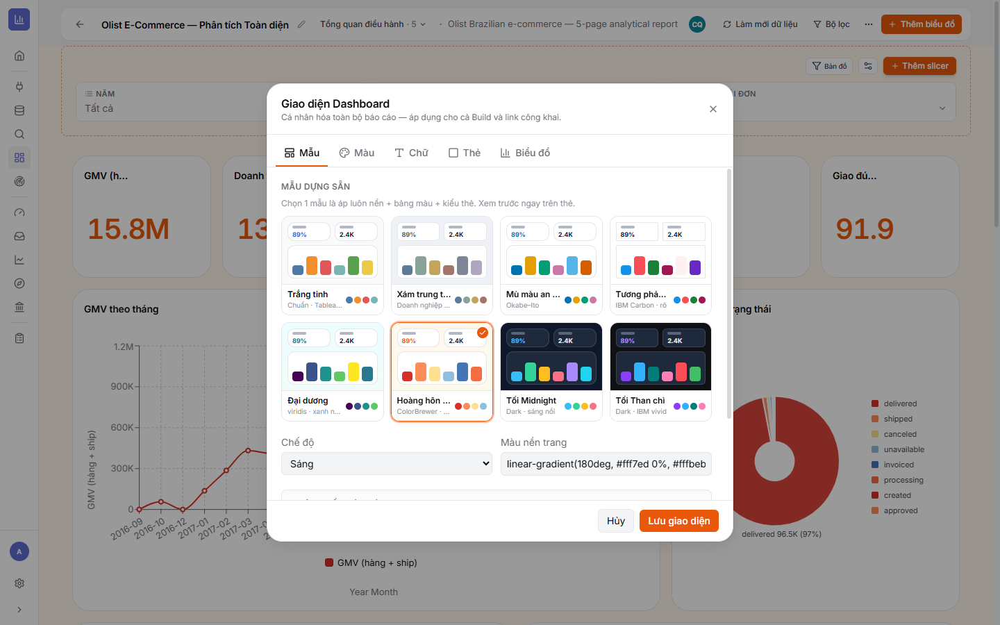
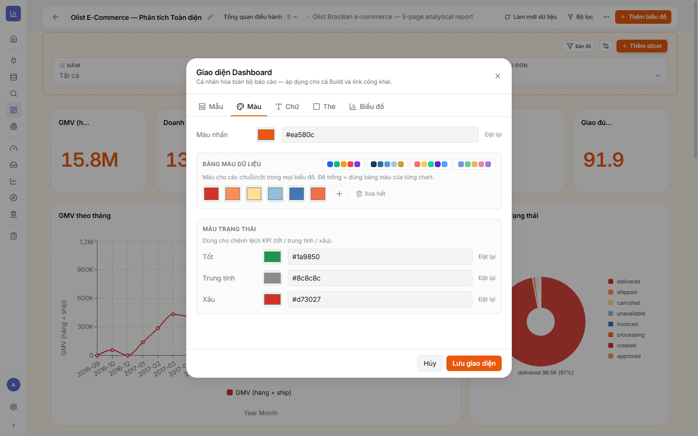
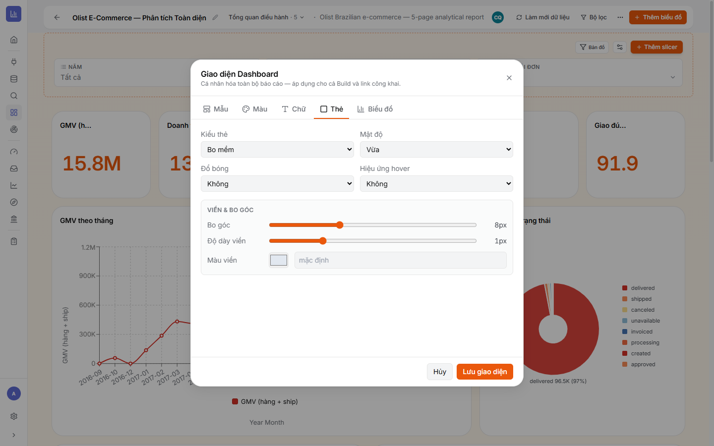
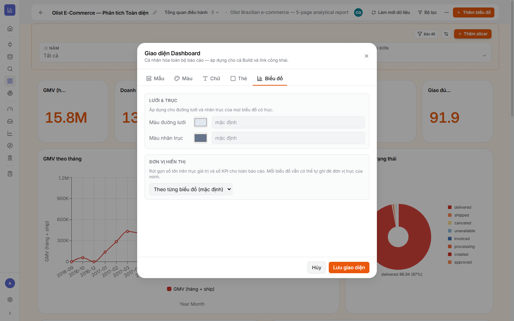

6.1Mở “Giao diện Dashboard” & phạm vi
⚙ Cách mở
- Trong Dashboard, bấm ⋯ (Thêm tuỳ chọn) → Giao diện.
- Hộp Giao diện Dashboard mở ra với 5 tab: Mẫu · Màu · Chữ · Thẻ · Biểu đồ.
- Chỉnh xong bấm Lưu giao diện (hoặc Hủy).
Áp dụng ở đâu: mọi thay đổi ở đây ảnh hưởng toàn báo cáo — cả khi bạn dựng (Build) lẫn khi người ngoài xem qua link công khai. Không phải chỉnh lại lần hai.
6.2Tab Mẫu — chọn nhanh một bộ giao diện
Là gì: Mẫu dựng sẵn = áp luôn nền + bảng màu + kiểu thẻ chỉ bằng một cú bấm. Có 8 mẫu (sáng & tối), kèm Chế độ và Màu nền trang.
- Mẫu sáng: Trắng tinh (Tableau), Xám trung tính (doanh nghiệp), Mù màu an toàn (Okabe-Ito), Tương phản (IBM Carbon), Đại dương (viridis), Hoàng hôn (ColorBrewer).
- Mẫu tối: Tối Midnight, Tối Than chì (IBM vivid).
- Chế độ: Sáng / Tối. Màu nền trang: màu đơn hoặc gradient (ví dụ
linear-gradient(180deg,#fff7ed,#fffbeb)).

Mẹo cho đẹp nhanh: chọn 1 mẫu hợp thương hiệu trước (ví dụ Hoàng hôn/Đại dương), rồi mới tinh chỉnh màu nhấn ở tab Màu. Với báo cáo trình chiếu tối, dùng Tối Midnight.
6.3Tab Màu — màu nhấn, bảng màu & màu trạng thái
- Màu nhấn — màu chủ đạo (nút, điểm nhấn), ví dụ
#ea580c; có Đặt lại. - Bảng màu dữ liệu — dãy màu cho chuỗi/cột trong mọi biểu đồ. Chọn preset hoặc tự thêm từng màu (+); để trống = mỗi chart dùng bảng màu riêng.
- Màu trạng thái — Tốt (xanh), Trung tính (xám), Xấu (đỏ); dùng cho chênh lệch KPI (tăng/giảm).

Đồng bộ màu: đặt bảng màu dữ liệu ở đây để mọi biểu đồ trong báo cáo cùng một tông — chuyên nghiệp hơn để từng chart mỗi màu.
6.4Tab Chữ — phông chữ
Là gì: tab Chữ chọn phông chữ và cỡ chữ nền cho toàn báo cáo, giúp tiêu đề/nhãn đồng bộ. Chọn font dễ đọc, tránh trộn quá nhiều kiểu chữ.
6.5Tab Thẻ — kiểu dáng ô/tile
- Kiểu thẻ — ví dụ Bo mềm (bo góc mềm).
- Mật độ — khoảng cách nội dung (Vừa…).
- Đổ bóng & Hiệu ứng hover — Bật/Tắt.
- Viền & bo góc — Bo góc (px), Độ dày viền (px), Màu viền.

6.6Tab Biểu đồ — lưới, trục & đơn vị hiển thị
- Lưới & trục — Màu đường lưới, Màu nhãn trục áp cho mọi biểu đồ có trục.
- Đơn vị hiển thị — rút gọn số lớn (tỷ/triệu/nghìn) cho toàn báo cáo; mỗi biểu đồ vẫn có thể tự ghi đè.

6.7Xong Chương 6 — Checklist “sao cho đẹp”
- ✅ Chọn một mẫu hợp thương hiệu + Chế độ (Sáng/Tối) phù hợp bối cảnh xem.
- ✅ Đặt bảng màu dữ liệu dùng chung để mọi biểu đồ đồng tông; định màu trạng thái cho KPI.
- ✅ Chuẩn hoá kiểu thẻ (bo góc/viền/mật độ) & đơn vị hiển thị toàn báo cáo.
- ✅ Bấm Lưu giao diện — kiểm tra lại vài trang để chắc đồng bộ.
➡️ Tiếp theo: Chương 7 · Public link — chia sẻ báo cáo ra ngoài (normal vs nâng cao).
🔗 Liên quan